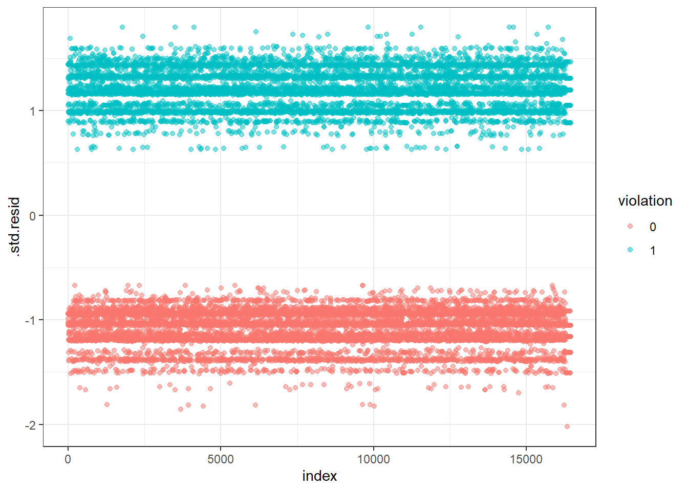

knitr::opts_chunk$set(
warning = FALSE,
message = FALSE)library(tidyverse)
library(broom)
library(viridis)
library(purrr)
library(modelr)
theme_set(theme_classic())
child_data = read_csv("./data/DOHMH_Childcare_Center_Inspections.csv") %>%
janitor::clean_names() %>%
distinct()
child_data = child_data %>%
select(center_name, borough, zip_code, status, age_range, maximum_capacity,program_type, facility_type,
child_care_type, violation_category,
violation_status,violation_rate_percent:average_critical_violation_rate,regulation_summary,
inspection_summary_result) %>%
drop_na(zip_code, age_range, violation_rate_percent,public_health_hazard_violation_rate, critical_violation_rate) %>%
filter(maximum_capacity != 0) %>%
mutate(
educational_worker_ratio = total_educational_workers/maximum_capacity,
program_type = tolower(program_type),
facility_type = tolower(facility_type),
borough = as.factor(borough),
status = as.factor(status),
program_type = as.factor(program_type),
facility_type = as.factor(facility_type),
child_care_type = as.factor(child_care_type)
)
#create binary variable according to regulation_summary
child_data <- child_data %>%
mutate(violation = if_else(.$regulation_summary == 'There were no new violations observed at the time of this inspection/visit.','0','1'),
violation = as.factor(violation))model_log <- glm(violation ~ borough + status + program_type + educational_worker_ratio,data = child_data,family = binomial(link=logit))
model_log %>%
broom::tidy(conf.int = T) %>%
mutate(OR = exp(estimate),
CI_lower = exp(exp(conf.low)),
CI_upper = exp(exp(conf.high)),
p_val = rstatix::p_format(p.value, digits = 2)) %>%
select(term, OR, CI_lower,CI_upper, p_val) %>%
knitr::kable(digits = 3, align = "lccc",
col.names = c("Term", "Estimated adjusted OR", "CI lower bound", "CI upper bound", "p-value"))| Term | Estimated adjusted OR | CI lower bound | CI upper bound | p-value |
|---|---|---|---|---|
| (Intercept) | 4.715 | 38.429 | 4.501930e+02 | <0.0001 |
| boroughBROOKLYN | 0.351 | 1.376 | 1.472000e+00 | <0.0001 |
| boroughMANHATTAN | 0.454 | 1.506 | 1.652000e+00 | <0.0001 |
| boroughQUEENS | 0.648 | 1.798 | 2.045000e+00 | <0.0001 |
| boroughSTATEN ISLAND | 0.247 | 1.230 | 1.342000e+00 | <0.0001 |
| statusExpired-In Renewal | 0.448 | 1.438 | 1.736000e+00 | <0.0001 |
| statusPermitted | 0.355 | 1.337 | 1.541000e+00 | <0.0001 |
| program_typeinfant toddler | 0.908 | 2.123 | 2.992000e+00 | 0.3159 |
| program_typepreschool | 1.001 | 2.355 | 3.218000e+00 | 0.9944 |
| program_typeschool age camp | 1.644 | 1.164 | 4.762402e+15 | 0.6894 |
| educational_worker_ratio | 0.706 | 1.721 | 2.503000e+00 | 0.0093 |
# Predict the probability (p) of violation positivity
probabilities <- predict(model_log, type = "response")
predicted.classes <- ifelse(probabilities > 0.5, "pos", "neg")
head(predicted.classes)## 1 2 3 4 5 6
## "neg" "neg" "neg" "neg" "neg" "pos"#probabilitiessummary(model_log)##
## Call:
## glm(formula = violation ~ borough + status + program_type + educational_worker_ratio,
## family = binomial(link = logit), data = child_data)
##
## Deviance Residuals:
## Min 1Q Median 3Q Max
## -1.8520 -1.0508 -0.8782 1.1727 1.7934
##
## Coefficients:
## Estimate Std. Error z value Pr(>|z|)
## (Intercept) 1.5508044 0.1314607 11.797 < 2e-16 ***
## boroughBROOKLYN -1.0465054 0.0487599 -21.462 < 2e-16 ***
## boroughMANHATTAN -0.7905779 0.0518737 -15.240 < 2e-16 ***
## boroughQUEENS -0.4339075 0.0503992 -8.609 < 2e-16 ***
## boroughSTATEN ISLAND -1.3983570 0.0896874 -15.591 < 2e-16 ***
## statusExpired-In Renewal -0.8025015 0.1065993 -7.528 5.14e-14 ***
## statusPermitted -1.0349521 0.1013003 -10.217 < 2e-16 ***
## program_typeinfant toddler -0.0960457 0.0957691 -1.003 0.31591
## program_typepreschool 0.0005541 0.0792675 0.007 0.99442
## program_typeschool age camp 0.4969849 1.2435739 0.400 0.68942
## educational_worker_ratio -0.3480415 0.1339063 -2.599 0.00935 **
## ---
## Signif. codes: 0 '***' 0.001 '**' 0.01 '*' 0.05 '.' 0.1 ' ' 1
##
## (Dispersion parameter for binomial family taken to be 1)
##
## Null deviance: 22719 on 16453 degrees of freedom
## Residual deviance: 21933 on 16443 degrees of freedom
## AIC: 21955
##
## Number of Fisher Scoring iterations: 4We can see from the summary that the licence status and educational worker ratio of the child care centers are
significant predictors of the violation rate with p-value< 0.05 while the facility type doesn’t significantly
influence the violation rate with p-value>0.05.
# Extract the adjusted odds ratio (and CI) for having violation comparing licence type of "active" against "Expired-in renewal" from all the boroughs.
all_logistic_E = child_data %>%
nest(data = -borough) %>%
mutate(
models = map(data, ~glm(violation ~ status + program_type + educational_worker_ratio, data = ., family = binomial(link = "logit"))),
results = map(models, ~broom::tidy(.x, conf.int = T))) %>%
select(borough, results) %>%
unnest(results) %>%
mutate(
OR = exp(estimate),
CI_lower = exp(conf.low),
CI_upper = exp(conf.high),
p_val = rstatix::p_format(p.value, digits = 2)
) %>%
filter(term == "statusExpired-In Renewal") %>%
select(borough, OR, CI_lower,CI_upper, p_val)
all_logistic_E %>%
knitr::kable(digits = 3, align = "llccc", col.names = c("Borough", "Estimated adjusted OR", "CI lower bound", "CI upper bound", "p-value"))| Borough | Estimated adjusted OR | CI lower bound | CI upper bound | p-value |
|---|---|---|---|---|
| BROOKLYN | 0.406 | 0.265 | 0.614 | <0.0001 |
| BRONX | 0.357 | 0.165 | 0.708 | 0.00519 |
| QUEENS | 0.644 | 0.390 | 1.057 | 0.08323 |
| MANHATTAN | 0.592 | 0.413 | 0.843 | 0.00395 |
| STATEN ISLAND | 0.721 | 0.235 | 2.323 | 0.56915 |
all_logistic_P = child_data %>%
nest(data = -borough) %>%
mutate(
models = map(data, ~glm(violation ~ status + program_type + educational_worker_ratio, data = ., family = binomial(link = "logit"))),
results = map(models, ~broom::tidy(.x, conf.int = T))) %>%
select(borough, results) %>%
unnest(results) %>%
mutate(
OR = exp(estimate),
CI_lower = exp(conf.low),
CI_upper = exp(conf.high),
p_val = rstatix::p_format(p.value, digits = 2)
) %>%
filter(term == "statusPermitted") %>%
select(borough, OR, CI_lower,CI_upper, p_val)
all_logistic_P %>%
knitr::kable(digits = 3, align = "llccc", col.names = c("Borough", "Estimated adjusted OR", "CI lower bound", "CI upper bound", "p-value"))| Borough | Estimated adjusted OR | CI lower bound | CI upper bound | p-value |
|---|---|---|---|---|
| BROOKLYN | 0.314 | 0.206 | 0.470 | <0.0001 |
| BRONX | 0.433 | 0.204 | 0.836 | 0.01894 |
| QUEENS | 0.292 | 0.198 | 0.422 | <0.0001 |
| MANHATTAN | 0.454 | 0.320 | 0.640 | <0.0001 |
| STATEN ISLAND | 0.478 | 0.162 | 1.485 | 0.18184 |
# Create a plot showing the estimated ORs and CIs for each borough
all_logistic_E %>%
mutate(borough = fct_reorder(borough, OR)) %>%
ggplot(aes(x = borough, y = OR)) +
geom_point() +
geom_errorbar(aes(ymin = CI_lower, ymax = CI_upper)) +
theme(axis.text.x = element_text(angle = 90, vjust = 0.5, hjust = 1)) +
labs(x = "Borough", y = "Estimated OR with CI(expired)")all_logistic_P %>%
mutate(borough = fct_reorder(borough, OR)) %>%
ggplot(aes(x = borough, y = OR)) +
geom_point() +
geom_errorbar(aes(ymin = CI_lower, ymax = CI_upper)) +
theme(axis.text.x = element_text(angle = 90, vjust = 0.5, hjust = 1)) +
labs(x = "Borough", y = "Estimated OR with CI(permitted)")From these two plots we can see that in Brooklyn, Bronx and Manhattan, the 95% confidence interval of odds ratio doesn’t include 1 and this tells us that in these three regions, cases with licence status of active generally have more violation probability than cases with status of expired or in-renewal. Similarly, in Brooklyn, Bronx, Queens and Manhattan, the 95% confidence interval of odds ratio doesn’t include 1 and this tells us that in these four regions, cases with licence status of active generally have more violation probability than cases with status of permitted.
#select only numeric predictors
child_data <- child_data %>%
dplyr::select(educational_worker_ratio)
predictors <- colnames(child_data)
child_data <- child_data %>%
mutate(logit = log(probabilities/(1-probabilities))) %>%
gather(key = "predictors", value = "predictor.value", -logit)ggplot(child_data, aes(logit, predictor.value))+
geom_point(size = 0.5, alpha = 0.5) +
geom_smooth(method = "loess") +
theme_bw() +
facet_wrap(~predictors, scales = "free_y")# Extract model results
model_log.data <- augment(model_log) %>%
mutate(index = 1:n())
ggplot(model_log.data, aes(index, .std.resid)) +
geom_point(aes(color = violation), alpha = .5) +
theme_bw()
From the plot we can see that the standard deviation of the data are all in acceptable region which means there’s no significant outliers in the dataset.
In this model, the outcome is log odds ratio of violation. Our key predictor is the numeric variable of “educational_worker_ratio”, which is the program-specific total number of educational worker in each center, divided by the maximum capacity, based on the square footage of class and play rooms, the number of toilets and sinks, and overall estimates from the NYC Department of Buildings. With the log of odds ratio for the association between violation and educational_worker_ratio = -0.34, holding other variables fixed, the odds of having the violation will decrease by 29%, for one unit increase in educational worker ratio.
We also included several categorical variables into our model. Based on the output, the interpretations of coefficients estimates are as follows: with log(odds ratio) = -1.04, -0.79, -0.33 and -1.40, the odds of having violation in Brooklyn, Manhattan, Queens and Staten island is 0.35, 0.45, 0.65 and 0.24 times of that in Bronx. with log(odds ratio) = -0.80 and -1.03, the odds of having violation in centers with “expired-in renewal” and “permitted” license is 0.45 and 0.36 times of that among centers with “active” license